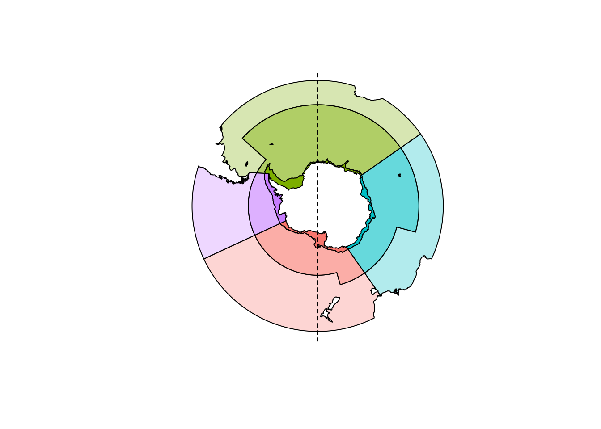
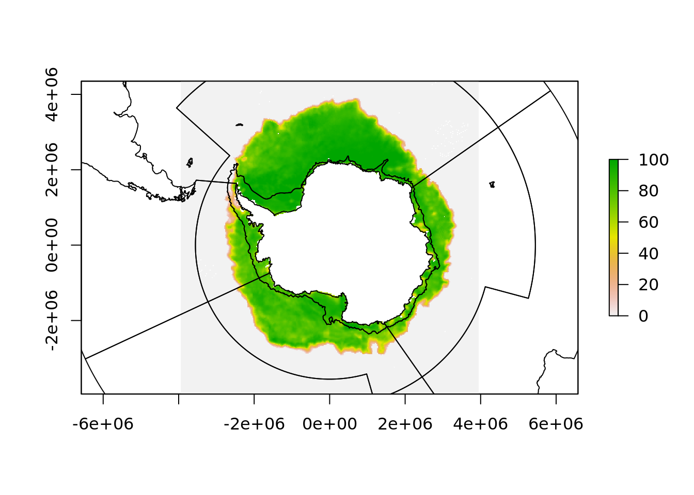
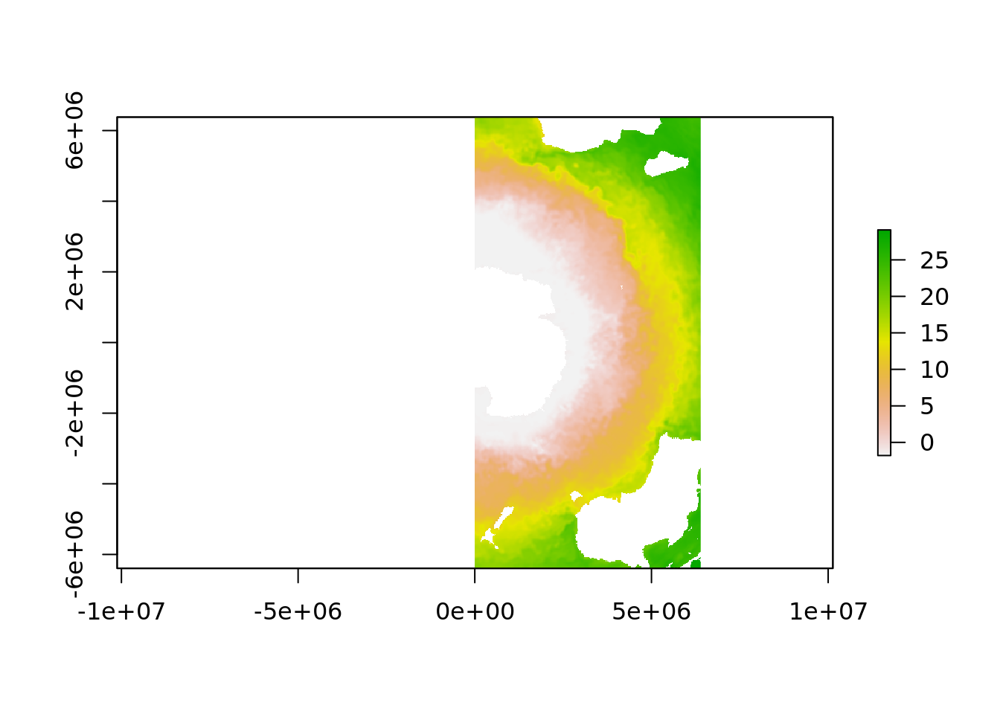
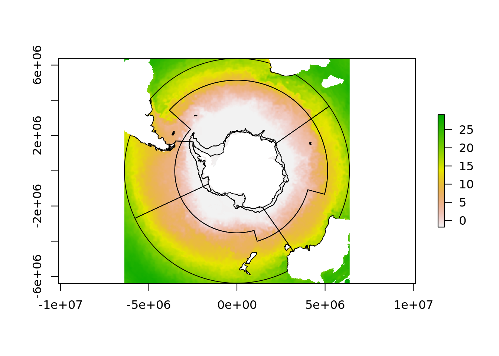
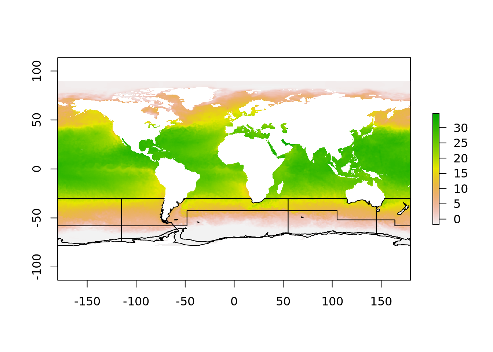
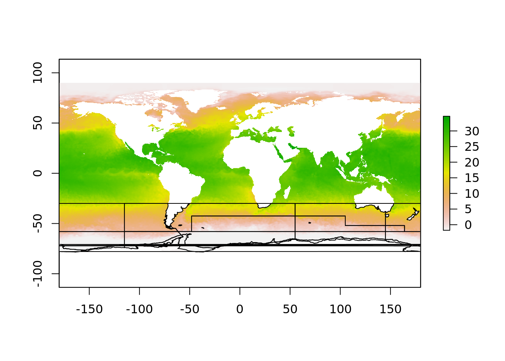
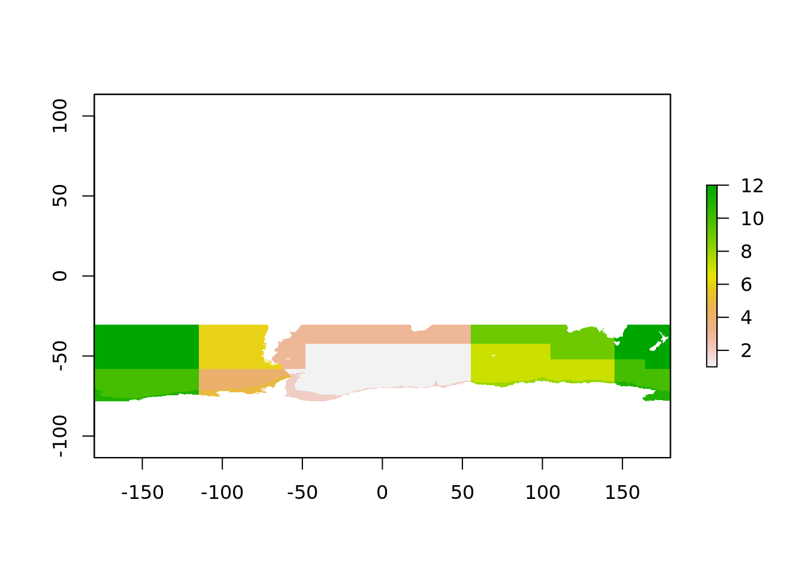

Chapter 4 Data handling in polar regions
##
## Attaching package: 'dplyr'## The following objects are masked from 'package:raster':
##
## intersect, select, union## The following objects are masked from 'package:stats':
##
## filter, lag## The following objects are masked from 'package:base':
##
## intersect, setdiff, setequal, unionIn practice, these kinds of problems in polar data mean that careful choices be made. For an involved whole-ecosystem assessment publication we generated a partition of the marine region of the Southern Ocean.

This was easy for mapping sea ice concentration, we have daily remote sensing maps of southern ocean sea ice and it’s trivial to reproject our polygons onto those.

But when it comes to sea surface temperature, these data have a number of issues.
One is that the data is natively in [0, 360] longitude range and if we project these data to our polar map we lose the western hemisphere.
## Warning in rgdal::rawTransform(projfrom, projto, nrow(xy), xy[, 1], xy[, :
## 53 projected point(s) not finite
The solution to that problem is to shift the part of the raster that is over the dateline back to the west
## Warning in rgdal::rawTransform(projfrom, projto, nrow(xy), xy[, 1], xy[, :
## 53 projected point(s) not finite
On the face of it this means we now have an easy job, simply project every sea surface temperature raster onto this polar map and then do the extraction.
But, this is going to be slow, it’s a lot of work to reproject 10000+ raster grids, and it inevitably involves resampling (remodelling) of the underlying data, imposing assumptions about what the data means. This is more important for other quantities like wind speeds and water flow directions, but is for the same ultimate reasons.
4.1 Overlay between different projections
This is what the overlay process would be like, and we might think we can inverse-transform our polar polygons to this.

But, it doesn’t look good. This is because the polar region that crosses the dateline is a single polygon, but in this projection it must be split in two pieces. This is why there is two objects aes_zone and aes_zone_ll. It can be a bit of work to construct these two versions but in our experience it really made things simpler, there’s simply a one-to-one relationship between the to data sets, one in longitude/latitude, and one in polar map coordinates.

4.2 Build an index betweeen the raw raster data and the polar map regions
This is a really powerful trick for processing spatial data in R, and boils down to performing the extraction from the raster data in the native grid.
Every pixel is the sea surface temperature data has a unique relationship with each polygon, it either belongs inside a single polygon or not. So we create this index by rasterizing the polygons into the grid. This seems backwards, but it means we now now which polygon every pixel belongs to.
aes_zone_ll$row <- 1:nrow(aes_zone_ll)
raster_polys <- fasterize::fasterize(sf::st_as_sf(aes_zone_ll), sea_temp180, field = "row")
plot(raster_polys)
That is all the “geometry lookup” work required done. We can produce an index between raster cell and polygon in a simple table.
## # A tibble: 1,036,800 x 2
## polygon cell
## <dbl> <int>
## 1 NA 1
## 2 NA 2
## 3 NA 3
## 4 NA 4
## 5 NA 5
## 6 NA 6
## 7 NA 7
## 8 NA 8
## 9 NA 9
## 10 NA 10
## # … with 1,036,790 more rows## we don't need very cell, the most southerly region is NA as is anything north of 20S
cell <- dplyr::filter(cell, !is.na(polygon))
cell## # A tibble: 230,383 x 2
## polygon cell
## <dbl> <int>
## 1 12 691201
## 2 12 691202
## 3 12 691203
## 4 12 691204
## 5 12 691205
## 6 12 691206
## 7 12 691207
## 8 12 691208
## 9 12 691209
## 10 12 691210
## # … with 230,373 more rowsTo extract the values for this index we use cell and this takes very little time:
cell$sst <- raster::extract(sea_temp180, cell$cell)
cell %>% dplyr::group_by(polygon) %>% dplyr::summarize(mean = mean(sst, na.rm = TRUE),
sd = sd(sst, na.rm = TRUE),
min = min(sst, na.rm = TRUE),
max = max(sst, na.rm = TRUE))## # A tibble: 12 x 5
## polygon mean sd min max
## <dbl> <dbl> <dbl> <dbl> <dbl>
## 1 1 1.01 3.59 -1.80 13.6
## 2 2 -1.76 0.0760 -1.80 -1.07
## 3 3 13.5 4.36 -1.37 23.3
## 4 4 0.435 2.10 -1.80 5.09
## 5 5 -1.69 0.114 -1.79 -1.16
## 6 6 9.96 3.82 2.92 19.3
## 7 7 1.91 3.60 -1.80 15.5
## 8 8 -1.75 0.0481 -1.80 -1.47
## 9 9 12.2 3.59 1.37 21.1
## 10 10 -0.440 2.02 -1.80 9.10
## 11 11 -1.76 0.0367 -1.80 -1.48
## 12 12 11.3 4.66 -0.770 22.6If we ran this using raster directly, it takes quite some time for a single layer and a single statistic, and if we have a lot of time slices it will really add up.